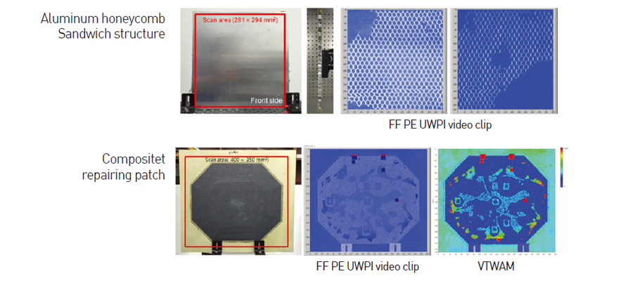
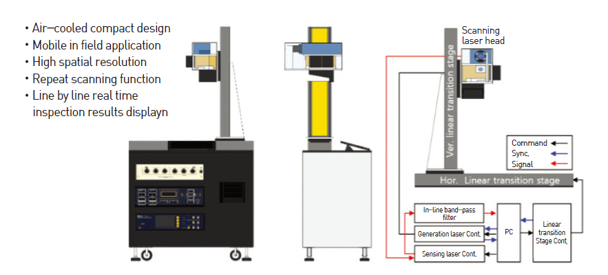

KAIST Top 10
KAIST Top 10
KAIST RESEARCH ACHIEVEMENTS
Development of Pulse-Echo Laser Ultrasonic Propagation Imaging System
Department of Aerospace Engineering Jung-Ryul Lee
Summary
By 2030, Korean fighter jets will be mass-produced and proudly defend Korean airspace, a feat made possible by the outstanding results of the Korean Fighter Experimental (KF-X) program. During the manufacturing process, the reliability of carbon reinforced-plastic (CFRP) components and structures will be ensured through the use of quality control methods based on a laser ultrasound-induced in-process bulk-wave ultrasonic propagation imaging (UPI) system, allowing for the production of fighter jets with zero defects. In addition, after completing a mission, Korean fighter jets will be subjected to structural inspections in a Smart Hangar, a real-time, non-destructive testing (NDT) system based on an in-situ, pulse-echo UPI system that uses laser ultrasound. Recognized for its excellence internationally, this technology will be successfully exported to our business partners, such as Indonesia, and leading corporations and institutes that are active in the area of systems integration, including Boeing and the Netherlands Aerospace Center.
R&D Report
As an in-situ, in-process NDT system for aerospace structures, the state-of-the-art, mobile Pulse- Echo Ultrasonic Propagation Imaging System has been successfully developed and produced to measure through-thickness ultrasonic waves up to 2,500 points for threedimensional visualization. Proof of concept for the system has been demonstrated with its application to the composite fuselage of a space launch vehicle (KSLV-II), control surface of a military cargo aircraft (CN-235), brake disk of an F-16, and composite fuselage of a guided weapon . It has also passed the F-16 standard reference test of the Korean Air Force. Two years of relentless development has led to the successful distribution of the system to the Air Force Logistics Command, and in February 2016, the Opto- Electro- Structural Lab (OESL) of KAIST’s Aerospace Engineering Department was chosen to be the Boeing-KAIST Technical Contact Lab, for which it received a two-year grant. In the final stage of manufacturing, aircraft, space launch vehicles, and missiles undergo non-destructive inspections, during which water couplant is required for ultrasonic transmission. Since this set-up requires a large amount of space for a sewer system and additional equipment, depending on the shape of the specimen, many aerospace component manufacturers struggle with certification problems, big budgets, and long delays. To overcome these limitations, leading countries in the aerospace industry have been focusing on laser-induced ultrasound.
 Figure 1. Final product (left), demonstration at international aerospace technology symposium (middle), system model (right)
Figure 1. Final product (left), demonstration at international aerospace technology symposium (middle), system model (right)
Research Results
After years of fundamental research, KAIST’s OESL passed the F-16 standard NDT in 2015 in order to win a project from the Korean Air Force. In December 2016, the system shown in Figure 1 (left) was delivered. This system conducts inspections five times faster than the systems developed by Tecnar and Par, two major corporations in the United States and has been designed for easy transportation and in-service and insitu inspections on aircrafts . allowing for easy transportation and in-service and in-situ inspections on aircrafts. Figure 1 (right) shows the inspection model for the vertical stabilizer of a military aircraft. Figure 2 presents a high-resolution visualization of a honeycomb sandwich specimen inspection test that was requested by Los Alamos National Lab in the U.S. In addition, the inspection test of a repairing composite patch under the Boeing company project not only visualizes artificial defects but also differentiates between the flow and accumulation of adhesive resin with superb spatial resolution and sensitivity. High inspection speed (2.5 kHz) and spatial resolution were achieved by using a compact scanning head that allowed for the combination of a generation laser beam and sensing laser beam. Furthermore, by using an internationally patented ultrasound visualization technique, the test result can be represented not as a twodimensional image but as a threedimensional video. Moreover, it has become easier for inspectors to capture all defects and wave characteristics. Lastly, the highspeed signal-processing technique and micrometer-scale spatial accuracy guarantee a high signal-to-noise ratio, making it possible to verify the inspection result in real time. With this achievement, in-situ and in-process NDT technology used Department of Aerospace Engineering Jung-Ryul Lee in the aerospace industry can be domesticated. With this cutting-edge technology, Korea will be better able to increase the reliability of its fighter jets, which will in turn increase the possibility of the jets being deployed nationwide. From February 2018, this system will be used by the Korea Photonics Technology Institute as a standard testing device for structural inspections. Furthermore, the application of this system to quality control is expected to create new markets and have a positive financial impact on both the development and management of the Korean military and civil aircrafts.

Figure 2. Inspection result: Los Alamos National Lab (top),
Boeing specimen (bottom)
 system layout
Research Funding
This project was funded by the Korean Aero Technology Research Institute and the Boeing company.
Research Outcomes
• J R Lee, “Apparatus and method for full-field pulse-echo laser ultrasonic propagation imaging,” US patent, Application number: 15007413, Jan. 27, 2016, Publication number: 2016.0349217, Dec. 1, 2016 (US and domestic patent).